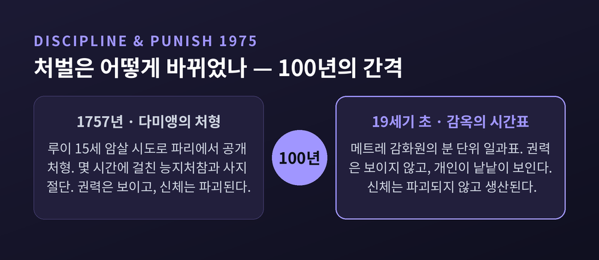
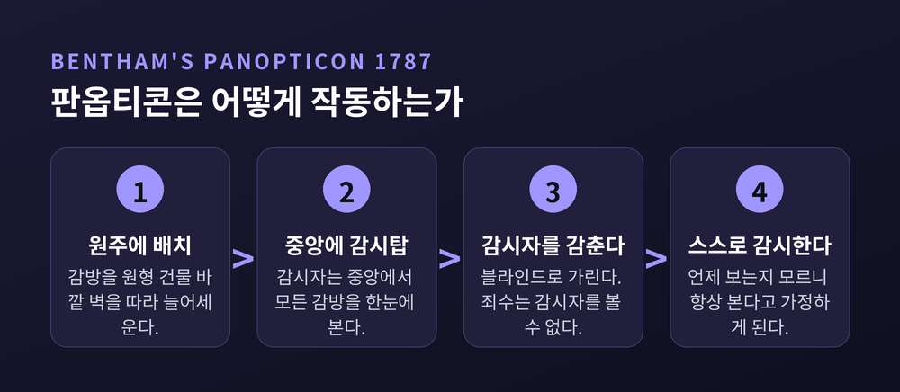
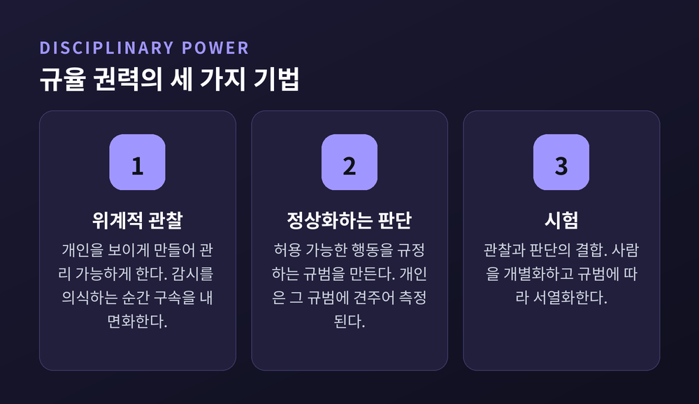
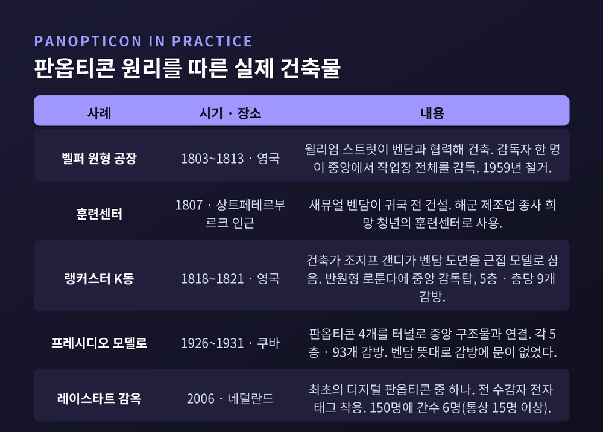
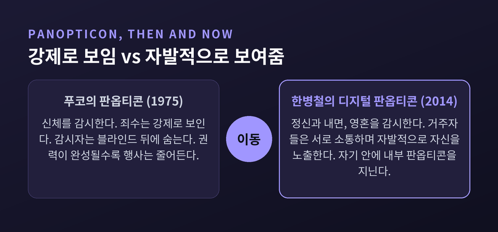

이번 글에서는 미셸 푸코의 규율 권력과 판옵티콘을 정리해 보겠습니다.
먼저 결론부터 말씀드립니다. 판옵티콘의 핵심은 감시탑이 아닙니다. 감시탑이 비어 있어도 작동한다는 것이 핵심입니다. 아무도 보고 있지 않을 때조차 스스로를 단속하는 사람 — 푸코가 규율 권력이라고 부른 것은 바로 그 상태를 만들어내는 기술이었습니다.
아래에서 세 가지를 다룹니다. 벤담이 실제로 설계한 판옵티콘의 원안, 푸코가 거기서 읽어낸 규율 권력의 작동 방식, 그리고 그 독해에 제기된 반론들입니다.
『감시와 처벌』은 처형 장면으로 시작합니다.
1757년, 로베르 프랑수아 다미앵이 파리에서 공개 처형됩니다. 죄목은 루이 15세 암살 시도, 곧 국왕 시해 미수였습니다. 처형은 몇 시간에 걸쳐 이어졌습니다. 능지처참, 유황으로 태우기, 말을 이용한 사지 절단, 그리고 소각까지.
푸코는 이 장면 바로 뒤에 전혀 다른 문서를 붙여 놓습니다. 19세기 초 메트레 감화원의 일과 시간표입니다. 몇 시에 일어나 몇 시에 일하고 몇 시에 눕는지가 분 단위로 적힌 표.
두 장면 사이의 간격은 채 100년이 되지 않습니다.
푸코가 던지는 질문은 여기서 출발합니다. 무엇이 바뀐 것입니까. 흔한 대답은 "인도주의적 개혁"입니다. 야만적인 신체형을 버리고 문명화된 형벌로 나아갔다는 설명입니다.
푸코는 그 대답을 받아들이지 않습니다. 그가 보기에 이것은 권력이 부드러워진 사건이 아니라 권력이 정교해진 사건입니다. 예전의 권력은 신체를 파괴했습니다. 지금의 권력은 신체를 생산합니다. 목표가 처벌에서 관리로 옮겨간 것입니다.

『감시와 처벌』은 1975년 프랑스 갈리마르에서 출간됐습니다. 원제는 『Surveiller et punir: Naissance de la prison』, 우리말로는 『감시와 처벌: 감옥의 탄생』입니다. 책은 네 부로 이뤄져 있습니다. 신체형, 처벌, 규율, 감옥. 판옵티콘이 등장하는 그 유명한 「판옵티시즘」 장은 3부 '규율'에 들어 있습니다.
2025년에 이 책은 출간 50주년을 맞았습니다. 한 매체는 이 책을 "어두운 걸작"이라 평했습니다.
판옵티콘은 푸코가 만든 말이 아닙니다. 그보다 약 190년 앞선 사람의 설계입니다.
제러미 벤담(1748~1832). 영국의 사회개혁가이자 공리주의의 창시자입니다. 1787년, 그는 일련의 편지를 통해 이 구상을 제안했습니다. 그가 붙인 이름은 소박했습니다 — "건축에서의 단순한 아이디어".
이 편지들은 1791년 『판옵티콘, 또는 감시의 집(Panopticon; or, The Inspection-House)』으로 확장되어 출간됩니다. 판옵티콘이라는 말 자체는 "모두 본다"를 뜻하는 그리스어 판옵테스(panoptes)에서 왔습니다.
설계는 이렇습니다.
건물은 원형입니다. 죄수의 감방은 바깥 벽을 따라 원주에 늘어섭니다. 중앙에는 감시탑이 섭니다. 감시자는 언제든 감방 안을 들여다볼 수 있습니다. 심지어 '대화관'이라 불리는 관을 통해 감방 안 죄수에게 말을 걸 수도 있게 설계됐습니다.
그리고 결정적인 한 가지. 죄수는 결코 감시자를 볼 수 없습니다.
벤담 자신의 문장을 옮깁니다.
"건물은 원형 — 유리를 씌운 철제 케이지. 죄수는 감방에서 원주를 차지하고, 감시관은 중앙에. 블라인드와 여러 장치로 감시자는 죄수의 시선에서 감춰진다 — 그리하여 일종의 '보이지 않는 편재'의 감각이 생긴다."
— 제러미 벤담, 『판옵티콘, 또는 감시의 집』(1791)
'보이지 않는 편재.' 여기 있는지 없는지 알 수 없지만 어디에나 있는 것 같은 느낌. 벤담이 노린 것이 정확히 이것이었습니다.
그는 이 장치를 "지금껏 유례없는 규모로 정신에 대한 정신의 권력을 획득하는 새로운 방식"이라 불렀습니다. 논리는 단순합니다. 죄수가 보이기는 하되 언제 감시당하는지 결코 알 수 없다면, 규칙을 따를 수밖에 없습니다.

이 대목이 흥미롭습니다.
1785년, 벤담은 러시아 제국 모길료프 주의 크리체프로 향합니다. 지금의 벨라루스입니다. 목적은 동생 새뮤얼 벤담을 만나는 것이었습니다. 새뮤얼은 당시 포템킨 공을 수행하고 있었습니다. 벤담은 1786년 초에 도착해 거의 2년을 머뭅니다.
그곳에서 그는 동생의 아이디어 하나를 봅니다. 노동자를 상시 관찰하는 방법이었습니다.
벤담이 한 일은 그 아이디어를 감옥에 적용한 것입니다.
즉 판옵티콘의 원래 발상지는 감옥이 아니라 작업장입니다. 통제할 대상은 범죄자가 아니라 노동자였습니다. 순서가 우리 예상과 반대인 셈입니다.
책의 정식 부제도 이를 뒷받침합니다. 그 긴 부제는 이 원리가 "어떤 종류의 시설에도 적용 가능하다"고 명시하며 교도소, 감옥, 노역소, 그리고 학교를 나란히 열거합니다. 벤담은 리블리에게 도면을 의뢰하면서 이 설계가 공장, 정신병원, 병원, 학교에도 쓰일 수 있다고 생각했습니다.
벤담은 1791년 책에서 이렇게 못 박습니다.
"이 원리는 예외 없이 모든 시설에 적용될 수 있다. (…) 그 목적이 아무리 다르거나 심지어 정반대라 해도 상관없다."
목적이 정반대라도 상관없다. 병을 고치는 곳이든 벌을 주는 곳이든, 사람을 감시해야 한다면 같은 구조가 통한다는 뜻입니다.
푸코가 이 문장을 그냥 지나칠 리 없었습니다.
푸코가 말하는 규율 권력은 무엇입니까.
학교, 감옥, 공장, 군대 같은 제도를 통해 작동하며 '순종하는 유용한 신체(docile and useful bodies)'를 생산하는 기법들의 총체입니다. 푸코는 이 메커니즘이 18~19세기에 부상하면서 사회를 바꿔놓았다고 봅니다.
가장 중요한 특징은 이것입니다. 규율 권력은 폭력이나 물리적 힘에 의존하지 않습니다. 그리고 통치받는 자의 의지를 고려하지도 않습니다.
때리지 않습니다. 묻지도 않습니다. 그냥 배치할 뿐입니다.
작동 기법은 세 가지입니다.
첫째, 위계적 관찰. 개인을 보이게 만들어 관리 가능하게 하는 감시 메커니즘입니다. 벤담의 판옵티콘이 그 전형입니다. 핵심은 뒷부분에 있습니다 — 개인이 자신이 감시당한다는 것을 의식하는 순간, 규율 권력의 구속을 내면화하기 시작합니다.
둘째, 정상화하는 판단. 허용 가능한 행동을 규정하는 규범을 만듭니다. 개인은 그 규범에 견주어 측정되고 규율됩니다. '정상'이라는 자가 먼저 생기고, 사람은 그 자에 대어집니다.
셋째, 시험. 관찰과 판단의 결합입니다. 시험, 의학적 진단 같은 것들입니다. 이것들은 사람을 개별화하고 규범에 따라 서열화합니다.

세 가지를 겹쳐 놓으면 익숙한 풍경이 나옵니다. 출석을 부르고, 기준을 정하고, 시험을 쳐서 등수를 매기는 곳. 우리가 12년을 보낸 그곳입니다.
푸코의 가장 유명한 문장은 이것입니다.
"판옵티콘의 주된 효과는 수감자에게 의식적이고 영구적인 가시성의 상태를 유도하여 권력의 자동적 작동을 보장하는 것이다. 감시가 그 효과에 있어 영구적이도록 사물을 배치하되, 권력의 완성은 그 실제 행사를 불필요하게 만드는 경향이 있다."
— 미셸 푸코, 『감시와 처벌』(1975)
마지막 구절이 이 글의 전부라고 해도 좋겠습니다.
권력이 완성될수록 권력을 행사할 필요가 사라집니다. 감시자가 자리를 비워도 됩니다. 탑이 비어 있어도 됩니다. 감시받는 자가 스스로를 감시하기 때문입니다.
푸코에게 판옵티콘은 감옥 설계도가 아니었습니다. 권력 관계의 일반화된 모델이었습니다. 그 '가시성의 조직화 원리'는 인구를 통제해야 하는 모든 제도에 적용됩니다. 병원, 학교, 공장, 정신병원.
역광이 비치는 감방에 갇힌 죄수는 자신이 지금 감시당하는 중인지 확인할 수 없습니다. 확인할 수 없으므로 항상 감시당한다고 가정하는 편이 안전합니다. 그렇게 가정하는 순간, 감시는 외부에서 내부로 이사합니다.
권력이 나를 누르는 것이 아니라, 내가 나를 누르게 됩니다.
여기서 반전이 하나 있습니다. 벤담의 판옵티콘은 그가 구상한 그대로 실현되지 않았습니다.
1799년, 벤담은 왕실을 대리해 밀뱅크 부지를 12,000파운드에 사들입니다. 영국의 새 국립 교도소를 자신의 판옵티콘으로 세우기 위해서였습니다.
1812년, 계획은 폐기됩니다. 뉴게이트를 비롯한 런던 감옥들의 고질적 문제 때문에 정부는 납세자 부담으로 밀뱅크에 감옥을 짓기로 결정합니다. 1813년 10월, 벤담은 약 23,000파운드를 보상받고 토지 소유권을 왕실에 넘깁니다.
1821년, 국립 교도소가 문을 엽니다. 논란이 많았고 질병 발생으로 평판이 나빴습니다. 벤담은 그 건물이 올라가는 것을 살아서 보았습니다. 그리고 정부가 취한 방식을 지지하지 않았습니다.
벤담은 말년 내내 이 거부를 비통해했습니다. 국왕과 귀족 엘리트가 방해했다고 확신했습니다. 그 좌절에서 그는 '사악한 이익(sinister interest)' — 권력자들의 기득권이 더 넓은 공익에 맞서 결탁한다는 개념 — 을 발전시킵니다. 이것이 그의 폭넓은 개혁론의 토대가 됩니다.
판옵티콘을 설계한 사람이, 판옵티콘이 거부당한 경험에서 권력 비판의 언어를 얻은 것입니다.
그렇다고 원리가 종이에만 남은 것은 아닙니다.

특히 쿠바의 프레시디오 모델로가 이야기의 결을 보여줍니다. 1925년 대통령 헤라르도 마차도가 벤담의 개념에 기반한 현대식 감옥 건설에 나섭니다. 1926년부터 1931년까지 4개의 판옵티콘이 지어졌습니다. 각각 5층, 93개 감방. 벤담의 뜻대로 감방에는 문이 없었습니다.
의도는 나쁘지 않았습니다. 죄수들은 자유롭게 돌아다니며 작업장에서 기술이나 문해를 배울 수 있었습니다. 생산적 시민이 되기를 바랐던 것입니다.
결말은 달랐습니다. 피델 카스트로가 수감될 무렵, 4개 원형동에는 6,000명이 들어찼습니다. 모든 층이 쓰레기로 가득했고, 수돗물이 없었고, 식량 배급은 빈약했습니다.
덧붙이면, 원형 감옥이라고 다 판옵티콘인 것도 아닙니다. 네덜란드의 브레다·아른헴·하를럼 감옥은 약 400개 감방을 갖췄지만 판옵티콘으로서는 실패했습니다. 안쪽을 향한 감방 창이 너무 작아 간수가 감방 전체를 볼 수 없었기 때문입니다.
여기서 한계를 하나 인정해야겠습니다. 푸코의 판옵티콘 독해는 학계에서 그대로 받아들여지지 않습니다.
벤담 연구자들은 푸코가 판옵티콘을 오해했다고 지적해 왔습니다. 표현은 꽤 직설적입니다 — 푸코의 판옵티콘 독해는 "부분적이고 단편적"이었다는 것입니다.
파리 2대학의 안 브뤼농에른스트는 이렇게 정리합니다. 벤담은 생전에 원래의 판옵티콘 감옥 외에도 여러 판옵티콘을 구상했습니다. "판옵티콘은 하나가 아니라, 벤담의 감시 기계는 최소 네 가지 다른 버전이 존재한다." 벤담은 좋은 통치에 대한 생각이 발전함에 따라 이를 계속 수정했고, 수감자의 필요와 자신의 공리주의적 비전에 맞춰 감시 모델을 고쳤습니다.
무엇보다 잘 알려지지 않은 사실이 하나 있습니다. 벤담의 감시 원리는 수감자만이 아니라 관리자에게도 적용됐습니다.
책임지지 않는 간수는 일반 대중과 공직자에게 관찰당해야 했습니다. 벤담은 '공개성' 원리를 통해 이 오래된 질문에 답하려 했습니다 — "누가 감시자를 감시하는가?"
푸코가 그린 판옵티콘에는 이 장치가 거의 나오지 않습니다. 그의 판옵티콘은 순수한 지배 장치입니다. 벤담의 원안은 그보다 복잡했습니다. 푸코의 그림은 원안의 전체가 아니라 그 일면인 셈입니다.
이 점은 짚어두는 편이 정직하다고 생각합니다.
1990년, 질 들뢰즈가 「통제 사회에 대한 후기」를 씁니다. 푸코를 계승하면서 갱신하는 짧은 글입니다.
들뢰즈의 지적은 이렇습니다. 푸코의 규율 사회는 닫힌 환경의 연속으로 특징지어집니다. 개인은 "하나의 닫힌 환경에서 다른 닫힌 환경으로" 이동합니다. 학교에서 병영으로, 병영에서 공장으로, 때로는 병원이나 감옥으로.
그런데 지금은 그 벽들이 흐려졌습니다.
들뢰즈가 말하는 통제 사회는 표면상 더 느슨하고 자유롭게 흐릅니다. 그러나 실은 훨씬 더 성공적인 구속 방법입니다. 통제 메커니즘은 분리된 울타리가 아니라 '연속적 변조'로 작동합니다. 가두는 대신 계속 조율합니다.
개인(individual)은 '분인(dividual)'이 됩니다. 정체성은 단일성이 아니라 코드와 데이터로 규정됩니다. 그리고 현대의 권력은 주체의 움직임을 예측하는 기술을 갖고 있습니다. 예측할 수 있으면 가둘 필요가 줄어듭니다.
물론 모든 학자가 여기에 동의하는 것은 아닙니다. 마크 켈리는 「규율은 통제다: 들뢰즈에 맞선 푸코」에서 반박합니다. 들뢰즈가 푸코의 규율 개념을 오독했고, 그의 테제는 부분적으로 잉여적이며 — 이미 푸코가 다룬 것을 말하고 있다는 점에서 — 부분적으로는 그저 거짓이라는 것입니다. 새롭지도 않거나 아예 일어나고 있지도 않은 것을 변화라고 서술한다는 지적입니다.
논쟁은 정리되지 않았습니다. 그대로 두는 편이 맞겠습니다.
마지막 장면입니다.
한국 출신 철학자 한병철은 2014년 『심리정치』에서 푸코를 한 걸음 더 끌고 갑니다. 부제는 『신자유주의와 새로운 권력 기술』입니다.
그의 대비는 선명합니다. 푸코의 규율 사회는 신체를 감시했습니다. 신자유주의 자본주의는 정신을, 내면을, 영혼을 감시합니다. 이것이 그가 말하는 '심리정치'입니다.
작동 방식은 두 겹입니다. 하나는 행동 데이터를 추출하는 다층적 디지털 감시 시스템. 다른 하나는 소셜미디어를 통한 내면적 자아의 자발적 노출입니다.
그리고 결정적인 차이가 여기 있습니다.
"오늘날 디지털 판옵티콘의 거주자들은 서로 능동적으로 소통하며 자발적으로 자신을 노출한다."
벤담의 판옵티콘에서 죄수는 강제로 보였습니다. 디지털 판옵티콘에서 우리는 스스로 보여줍니다. 자랑스럽게, 정성껏, 매일.
한병철은 '정량화된 자기'를 두고 이렇게 말합니다. 그것은 잘 사는 것에 관한 윤리가 아니라 자기 감시를 위한 기술이라고. 그가 그리는 오늘의 주체는 이렇습니다 — "스스로를 밝히고, 스스로를 감시하는 주체, 자기 안에 자신의 내부 판옵티콘을 지닌 주체."

소셜미디어는 점점 더 사회적 영역을 무자비하게 감시하고 착취하는 디지털 판옵티콘이 되고 있다는 것이 그의 진단입니다. 쇼샤나 주보프와 재런 러니어 같은 기술 비평가들은 같은 문제를 반대편에서 봅니다. 자기 노출의 습관화를 설계하는 기업들의 관점입니다. 주보프의 『감시 자본주의 시대』가 그 작업입니다.
벤담은 감시자를 숨기려고 블라인드를 궁리했습니다.
지금은 그럴 필요가 없습니다. 아무도 숨지 않아도, 우리가 알아서 올라갑니다.
정리하면 이렇습니다.
1757년의 권력은 사지를 찢었습니다. 1975년에 푸코가 그려낸 권력은 시선 하나로 충분했습니다. 2014년에 한병철이 본 권력은 시선조차 필요 없습니다. 우리가 자진해서 제출하니까요.
『감시와 처벌』이 50년을 견딘 이유는 감옥을 잘 설명해서가 아니라고 생각합니다. 감옥 바깥을 설명해버려서입니다.
푸코의 독해가 벤담의 원안 전부를 담지 못했다는 지적은 타당합니다. 들뢰즈의 갱신이 과장이라는 반론도 살아 있습니다. 그럼에도 남는 문장이 하나 있습니다.
"권력의 완성은 그 실제 행사를 불필요하게 만든다."
그러니 이렇게 물어야 할 것 같습니다. 오늘 내가 한 그 망설임은, 정말 누가 보고 있어서였습니까.